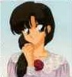
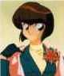

I Personaggi - La Famiglia Tendo
|
I Personaggi - La Famiglia Tendo |
Tendo significa "Via del Cielo" o "Destino". I nomi dei Tendo hanno a che fare con le nuvole.
| Tendo Soun |  |
È probabilmente il personaggio più emotivo di tutta la serie in quanto capita spesso di vederlo piangere copiosamente per i motivi più disparati. Soun e Genma sono vecchi amici sin dai tempi in cui si allenavano insieme come allievi di Happosai, prima di aprire le loro scuole di arti marziali personali; ancora oggi, sono ognuno il migliore amico dell'altro. Solitamente Soun diventa furioso ogni volta che sembra che Ranma abbia un'altra ragazza oppure quando sembra che Ranma preferisca qualcun'altra ad Akane.
Significato del Nome: Soun significa "Nuvola Veloce"
| La Signora Tendo |  |
La Signora Tendo, cioè la moglie di Soun, è morta quando Kasumi, Nabiki ed Akane erano molto piccole. Di lei non si sa praticamente nulla, neanche il nome.
| Tendo Kasumi |  |
È la più grande delle figlie di Soun ed ha 19 anni. È la classica ragazza giapponese ed ha preso in mano la conduzione della casa dopo la morte della madre. Solitamente rimane poco turbata da tutto quello che le accade intorno. Anche se sembra una ragazza priva di sentimenti ed espressioni, possiede in realtà un carattere molto dolce e comprensivo, pronto ad ascoltare e porta avanti la casa da sola con molta dedizione e pazienza. È segretamente (nel senso che l'unica a non essersene accorta è lei ^__^;;) innamorata del Dott. Tofu e vorrebbe che Akane diventasse una perfetta casalinga e si sposasse felicemente con Ranma.
Significato del Nome: deriva da "kasumi-gumo" cioè una "Nuvola che è come la Nebbia"
| Tendo Nabiki |  |
È la figlia secondogenita ed ha 17 anni. Ha un carattere a volte meschino, si comporta come un'usuraio e cerca di trarre profitto da ogni situazione in cui si trova coinvolta. Non disdegna neanche le scommesse ed è pronta a "giocare sporco" pur di vincerle. Ha messo su perfino un "commercio" di fotografie di Ranma-chan ed Akane, per spillare quattrini al povero Tatewaki Kuno. A volte, però, ha dato anche dei buoni consigli e ha mostrato di essere l'unica in possesso di buon senso e facoltà mentali in certe situazioni.
Significato del Nome: deriva da "nabiki-gumo" cioè "Nuvola Fluttuante"
| Tendo Akane |  |
È la figlia più giovane [nonché la ragazza che preferisco in tutta la serie!!!! :-)) ] ed ha 16 anni. È una ragazza dal "caratterino" molto forte e "focoso" e odia i ragazzi, nonostante si trovi spesso al centro dell'attenzione di questi ultimi; anzi, praticamente è la ragazza più corteggiata della scuola nonostante sia scontrosa e scostante verso molti di loro. Ovviamente ha rifiutato da subito il suo fidanzamento forzato, specialmente con un "maniaco pervertito" (come dice lei) come Ranma, il quale a sua volta non ha accettato il fidanzamento con un "maschiaccio violento e completamente privo di sex-appeal".
Comunque sia, Akane si dimostra gelosa di tutte le ragazze che provano ad "accalappiare" Ranma, ma contemporaneamente nega ogni suo interesse verso Ranma stesso, così come fa Ranma nei confronti di Akane. Nonostante i loro continui litigi (spesso anche maneschi) e rifiuti, Akane e Ranma, nell'arco di tutta la serie, vedranno crescere invece il loro amore e l'attrazione reciproca, anche se continueranno a negarlo.
Un'altra caratteristica di Akane è la sua cucina "velenosa" che si abbatte spesso e volentieri come una sventura sugli abitanti del dojo, anche se lei non accetta mai la confitta e continuerà a provare e riprovare in cucina, e l'essere disposti ad assaggiare le sue "specialità" sarà spesso una sfida per chiunque. Dal momento che Ranma è il fidanzato di Akane, si ritroverà suo malgrado a vestire spesso i panni della vittima della cucina di Akane, la quale è completamente incapace in ognuno dei compiti tradizionalmente femminili come cucinare, cucire, guidare la cerimonia del tè ecc. Comunque ha una grande forza di volontà e va avanti con orgoglio nei suoi tentativi, e rimane molto contrariata quando qualcuno, soprattutto Ranma, la critica. A volte è un po' goffa anche nelle arti marziali, anche se, per essere una ragazza, combatte molto bene. È incapace anche nel nuoto e quando entra in acqua cola a picco come un sasso.
Nonostante tutto questo, è sicuramente una ragazza molto amabile e ha sfoggiato più volte insospettate doti di femminilità e dolcezza. Ranma stesso pensa che, nonostante tutto, Akane sia una ragazza davvero carina e non se la farebbe portare via da nessuno.
Significato del Nome: deriva da "akane-gumo" cioè "Nuvola Scarlatta"
Alias: li tira fuori sempre Ranma. Il più usato è "kawaiikune", cioè "senza fascino"
<<-RITORNA ALL'INDICE DEI PERSONAGGI
| Grafica, impaginazione e testi sono (c) di Francesco "Nibunnoichi" Giordano e non possono essere usati senza il consenso dell'autore. |